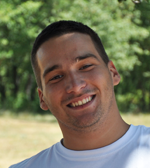

Long time ago, as a child, Nikolina was amazed by the dinosaurs and would carefully follow each and every documentary about them that was shown on TV. She was amused by the thought that one day she’ll become a palaeontologist and search for new dinosaur species in Chile. It turned out quite differently though. She first became (and remained) fond of mathematics, and in the end realized that her true love is chemistry. This happened sometime during the additional chemistry classes in V. gymnasium that she attended. Everything else naturally followed: she decided to study chemistry at Faculty of Science, University of Zagreb, where she obtained her BSc and MSc degrees. She developed a specific fondness for research of protein’s function and dynamics, and is now doing her PhD at KU Leuven, Belgium.
Her Summer School of Science story began in 2013 when she was asked to hold a swapshop at S3++. Although she was previously engaged in science popularization activities such as workshops within Magic in Science project and mentoring students in V. gymnasium, S3 experience was something completely new. She fell in love with the Summer School, especially its amazing atmosphere. She believes that for those few weeks the School is absolutely the best and most inspiring place in the world for young science enthusiasts. So she came back to lead a project at S3 2015, to organize S3 in 2017 and 2018, and is now back again in the role of S3 2019 organizer.
In her free time, Nikolina enjoys drawing, painting and making stuff, cooking new dishes, reading books, and travelling across Flanders and sometimes further.

Dora has been showing a great amount of curiosity since her early childhood, constantly questioning and wondering why and how things happen, which has made her a really heavy kid to put up with. Although her love for science has started back then, she has become aware of it in the elementary school. Discovering the world of biology and chemistry was a real turning point in her life. She has started to participate in competitions and school projects where she has met her peers with the same interests.
She joined the Summer school of science in 2014, as a participant at the S3++ camp, and that is when she definitely confirmed her intention and desire to study molecular biology. But her story with the School was not finished in 2014, boosted by all the amazing experiences and wanting to bring back the energy and motivation she gained there, she came back in 2016 and 2017 as a swapshop leader and a technical assistant. After organizing S3 2018, she is now back as S3 2019 organizer.
Apart from studying, she tends to share her enthusiasm for science by participating in events such as Night of Biology and Summer Science Factory. She uses her free time to learn Spanish, do sports, travel or just hang out with her friends.
The vastness of the universe fascinated Leonardo as a child, who fell in love with physics and astronomy through learning about black holes and the formation of stars and galaxies. As he grew older, Leonardo’s curiosity grew bigger, and he decided to study Natural Sciences at the University of Cambridge, where he had the opportunity to learn about all areas of science, whilst maintaining his focus on physics. His interests shifted, however, from unimaginably large cosmic expanses to unimaginably small nanoscopic sizes. This is why he is now pursuing his PhD in nanomagnetism at ETH Zurich, combining experiments and theory in order to investigate exciting new magnetic phenomena and make better magnets for energy conversion, cars and data storage.
Leonardo joined the Summer School of Science in 2016 as a leader of the project “The mystery of light – investigating how a photon can be at two different spots simultaneously”. He thoroughly enjoyed the experience, especially because he was able to share his enthusiasm and passion for science with young students who absorbed new information like a sponge. The most rewarding moments of the School for him were seeing his students’ eyes light up as they discovered something new – Leonardo believes moments like these inspire young people to become scientists. Seeing what an amazing experience the School is for them, he was honored to be an organizer of the S3++ 2018 and is even more honored to return in the same role this year.
Apart from science, Leonardo enjoys swimming, cycling and hiking. He is a real nature and animal lover and will be very glad to see pictures of your pets! Leonardo strongly embraces the diversity and tolerance of multinational environments and looks forward to the Summer School of Science and its strong international character.
Dunja loved solving crosswords and puzzles during childhood. Later her passion shifted to solving mathematical problems and equations and was sure that her future will revolve around mathematics and computational biology. During her last year in primary school she won the second place on state competition in maths and as prize, won a chance to take part in Summer School of Science. There she took a part in a project whose aim was to transform bacteria with fluorescent proteins. Participating in this school opened her doors into a new world of biological sciences which changed her life dramatically. After, she participated in three more summer schools, every time meeting peers with similar interests and working on projects from various scientific fields. In the end she decided that computational biology is the filed that interests her the most. She finished BSc and MSc in Molecular Biology at University of Zagreb and now is perusing a PhD in regulatory genomics at Imperial College London, working on a project that is looking at combinatorial regulation of gene expression during the embryonic development.
Dunja believes that because of good science popularization, her life path changed and that’s the reason she tries to do the same thinking that she might influence others. She took various roles in organization of open days of her former faculty (“Noc Biologije”) as well as volunteering on Science Festival organized by Imperial College. In 2015 she came back to S3 as project leader, and this year as S3++ organizer. In her free time, she enjoys cooking and experimenting with exotic ingredients as well as travelling and spending time in nature.
Space was something Stjepan admired since his early childhood. He loved reading about the space telescope Hubble and the space probe Voyager 2. In elementary school he found his love for physics, geography and engineering. In high school he was interested in programming and became more involved with physics. He decided to study engineering in college, where he found a passion for 3D modelling.
Stjepan was a participant of the S3++ camp in 2016 and was involved in the project called Electric and magnetic guides and applications. It was a great opportunity for him to see real-life experiments and interactions between fellow scientists and his colleagues. This year he will be a technical assistant at the S3 camp and will experience new challenges.
Stjepan is currently a second-year student at the Faculty of Mechanical Engineering and Naval Architecture, where he is studying Computer Engineering. He likes to spend his time with science fiction books, music and gaming. He plays the guitar and likes to listen a wide variety of music.

Luka was interested in and amazed by many things, ever since his childhood. His first contact with science was when he started reading books about dinosaurs and astronomy. In elementary school he fell in love with geography, mathematics and programming. Then in high school he started to become more interested in physics, so it was difficult for him to choose what field of science to study. In the end he chose physics because he wishes to become an astrophysicist.
He became a part of Summer School of Science in 2017 when he was a participant of the S3++ camp in „Investigation of aerodynamic properties“ project. It was an interesting opportunity for him because he saw what it is to be a real life scientist. This year he will be a technical assistant so he will experience a different role than his previous one.
Luka is currently a second-year student of physics at the Faculty of Science in Zagreb. He likes to spend his free time watching movies, tv series, reading a good book or gaming. Music is also an important part of his life as is browsing internet in search of interesting scientific content.

Anna-Maria Križanac |

Sebastijan Dumančić |
Petra Krznar |
Matija Žeško |

Jelena Tica |
Matilda Maleš |

Edi Topić |

Mislav Omerbašić |
|
Antonija Burčul |

Jelena Španiček |

Nemanja Janković |
Neva Margetić |

Petra Pušić |
Marko Košiček |
Nino Antulov-Fantulin |
Ivan Sudić |
Anna-Maria has always been fascinated and intrigued by the world around her. Her parents always encouraged her to be curious and to question things around her. At one point, however, things started to get out of hands when she began to ask innocent childish questions to which even adults did not know answers. Over the years, Anna-Maria has grown up, but she still asks a lot of questions. Sometimes, she even confuses Google!
As a child, Anna-Maria did not know that she would be on a path to become scientist. Instead, she considered other career paths, but eventually everything fell into the place and the decision, which has never been regretted, was made.
Anna-Maria is a relatively new member of the Summer School family as she joined in 2017. She was one of the project leaders working on the project “Ear in the wall”. Impressed and motivated by the whole event she has returned this year as one of the Co-organizers hoping she can transfer a part of her experience to participants hungry for knowledge and new challenges. Next to science, Anna-Maria enjoys getting lost in the worlds of adventures in books, cooking and traveling. As a fan of international cuisine, she always welcomes new recipes.
Sebastijan has found his interest in science by reading Jules Verne's works, especially 20 000 miles under the sea. Unable to build his own Nautilus, he became interested in computer science, since he was raised up by two informaticians. After writing his first programs in Logo, he was convinced it was the right choise for him.
Sebastijan joined the Summer School of Science in summer of 2012 as project leader, in charge of a project about computer science and recognizing music taste. He was impressed with the motivating atmosphere and passion of young students and educators, so he decided to come back as an organizer. Until now, he has organized S3 camps in years 2013, 2015 and 2017. Previously, he was also a member of Young Gifted Mathematicians „Marin Getaldić“ and one of the organizers of Young Mathematicians Summer Camp.
He is currently a PhD student at KU Leuven, Belgium. His main research interests are in the field of machine learning - computer algorithms that teach themselves how to solve a particular problem. He is particulary interested in modelling unobserved aspects of such problems. In his free time, Sebastijan enjoys travelling, cooking and reading.
When Petra was a child, her mother said – ‘When you find a career that you really like, it is like you won a jackpot!’ When she started studying molecular biology, Petra really won a jackpot because she found something that fulfilled her. During her studies, Petra had different interests, ranging from cell biology and biochemistry to biophysics and computational biology. Nowadays she is at ETH Zurich, doing her PhD in systems biology, trying to disentangle mitochondrial dysfunction by metabolomics.
Popularization of science has become a part of Petra's life after the first year of the Night of Biology in 2009. After hearing some awesome stories about the Summer School of Science, she was introduced to the School in the same year, by doing a workshop on homemade DNA isolation. Petra was quite astonished by the spirit of the School, people that worked there and the enthusiasm of the high school students. In 2012 she returned to the School with her own project at S3++, and twice as an organizer - S3++ in 2013 and S3 in 2015. In year 2017 she was back once more to meet new enthusiasts and inspire new generations to find their inner scientists.
When she has some free time on her hands, Petra enjoys reading (mostly fantasy) books, which aid her in the invention of new worlds and mysteries for popular role-playing DnD game, as well as playing other board games or travelling.
Science is a newer addition to Matija's life, as he didn't decide to pursue it until University. A long time ago, Matija studied Latin and Greek, he was good at it and liked it to a degree that it was what he wanted to study and do for the rest of his days. Fortunately, Matija also had a very good Greek teacher who told him that she would behead him if he did that because she saw a potential for natural sciences. And she was right. Matija is now a Master of Physics working towards a PhD at ETH Zurich and having worked at CERN previously. His field of research is manipulation of the motion of highly-excited atoms using electric and magnetic fields.
The Summer School of Science in Požega entered his life last year through his co-organiser Petra. She introduced him to the Summer School and he became a Project Leader in 2016. The experience of leading a team of young scientists and inspiring them all to pursue a PhD made him see the value this school has to offer to everyone. This year he is back in an increased capacity - leading the school and making sure that everyone has the best science-filled summer.
He also hasn't forgotten the humanities. He is actively engaged in Model United Nations in Zurich where he organises the local conference. He also volunteers in the local "Room to Read" chapter working in a team which is raising funds to improve education in third-world countries. In his free time, Matija enjoys learning languages, reading, and travelling.

For Jelena it all started even before primary school. While loving to watch TV and cartoons, Jelena’s thorough obsession were documentaries, especially ones by David Attenborough. She also enjoyed putting puzzles together, usually making it more challenging by turning the pieces upside down. As she went to school, biology and math grew up on her and she especially got interested in human diseases and parasites. What better way to combine the passion for solving problems and natural phenomena than by learning more about these things? Although she was hesitant towards which program to enroll to, she decided to combine the passion for math and human biology by becoming a student at the Faculty of Science, University of Zagreb, where she obtained her B.Sc and M.Sc in Molecular Biology. She recently finished her PhD at the European Molecular Biology Laboratory (EMBL Heidelberg) in a field of genomics. Although she considers herself to be a molecular biologist, she spends most of her time sitting in front of a computer screen performing computational analyses on large genetic variations found within and between different populations. In her free time Jelena likes to read a lot, watch movies, write her beauty blog and travel.
Jelena joined the Summer School of Science two years ago for the first time as a project leader, and of course completely fell in love with the whole project, people and the enthusiasm spreading all over the place. When she got the opportunity to organize last and subsequently, this year's Summer School, she jumped in without hesitation, despite knowing that it will present a big challenge. Even though she is a relatively new member of the Summer School family, Jelena was always inspired to take part in teaching and promoting science as much as she could through various outreach activities, such as Night Of Biology and EMBL School Ambassador program. This year she cannot wait to see all those new and fresh faces in Požega and share this special experience with them.

Unlike today, as a kid Matilda watched a lot of TV. Fortunately for her, TV had something to offer back then, and one her favourite shows was “Il etais une fois la vie”. This everlasting French cartoon, telling the story about human body and all those invisible amazing processes that are going on in there, made her want to learn more about the minute world of molecules and chemicals that surround us. During high school, thanks to her biology and chemistry teachers, her love for science was sparked even more, so she decided to study at Faculty of Sciences. She finished her BSc in Molecular Biology at University of Zagreb, after which she moved to Germany to do her MSc at the University of Heidelberg. Currently, she is a PhD student in genomics at the European Molecular Biology Laboratory (EMBL) in Heidelberg, trying to find out what is the importance of the maysterious non-coding genome in the embryonic development.
Matilda has been a part of S3 family for a very long time now, eversince 2006. She first came to the School as a high school student, and then kept coming back in various roles from swapshop leader, random visitor, technical support, project leader… She also took part in other science popularization events such as Night Of Biology and Paris-Montagne. Knowing how much inspiration and motivation one can get from the Summer School, she accepted the tough job of the organizer without hesitation. She is looking forward to meeting new bright minds and science enthusiasts, and bringing them all together at this very special Summer School.
Edi already fell in love into science at elementary school, thanks to the irresistible need to blow something up and very tolerable parents. From the first burnt eyebrows to the first successful rocket engine, Edi has compensated the lack of knowledge about highly energetic materials with loads of scientific books. That is how the passion for chemistry and science was born.
Edi joined the S3 in 2013. as a project leader at a project which dealt with synthesis and charachterisation of polymers and in 2014. as a project leader at a project which dealt with hydrogen bonds. Because of exquisite impressions and unsurpassable students, he decided to join in as organiser this year. This school provides unique boost for students who prefer science, but also one-of-the-kind experience for project leaders who want to promote science among younger generations. Also, Edi is a leader of popularisation project „Entropy“ which promotes chemistry among elementary and high school students.
Edi is currently student at Chemical division of Faculty of Science, Zagreb, among which he explores processes of crystallization of pharmaceuticaly active substances. Besides that, he adores to manufacture pyrotechnics, flow into rocket engineering (either in computer simulation or in real world) and make jet engines or anything that rumbles, roars or gives out flames.
Discovering Chemistry at 13 years old and being presented with various experiments with plants and animals in Biology, Mislav quickly became enthused in science. Throughout high school his interest in natural sciences only expanded, as well as his desire to discover new things. His parents home became a makeshift laboratory for a time, which his mother condoned despite her fears that she might find his white mice under her bed.
When he was 16 he participated in the Multilateral Comenius Project allowing him the opportunity to gain working experience with students in different countries. In 2011 Mislav came to Summer School of Science as a participant. Realising how much of a positive influence it had on him, he decided to continue in 2013 as a swapshop leader, and in 2014 he led a project. The popularization of science is something he is passionate about, so he participated in Science Picnic, teaching young students how to isolate DNA from fruit. Mislav is eager to share and gain new experiences this year during the School, with new faces but the same old glow for science.
Now he is a fourth-year student at the School of Medicine in Zagreb. His main interest is the connection between medicine and molecular sciences, especially on a cellular level, and the application of new discoveries in treating human diseases. In his free time he enjoys watching movies, reading books and hanging out with friends.
Is there a better place to fall in love with science than the Summer School of Science? For Antonija, the Summer School is a place is where it all started – she came as a high school student in 2009 and stayed ever since.
Antonija did her bachelor studies in chemistry at the University of Zagreb. There she took an advanced course in computational biophysics and, thanks to her brilliant professor Bojan Zagrovic, lost her head over the exciting scientific puzzle – the wobbly 3D structures of biomacromulecules. Merging two passions, science and travelling, lead her to two different parts of world. In Switzerland she investigated the dynamics of amyloid peptide involved in Alzheimer’s disease, while the main topic during her stay in Singapore was protein-protein interactions in the cell. Coming back to Switzerland for her Master studies in Structural Biology and Biophysics at ETH Zurich, she worked on elucidating how proteins adopt their 3D structure while coming out of the ribosome. Antonija is currently examining different opportunities for her graduate studies.
Antonija believes education is one of the most powerful ways to change the world. In Zagreb she led the project “Magic in Science”, with the aim to popularize science through scientific workshops with kindergarten age children. Last year, together with Andjela Saric, she started the EVO Internship Portal - an online platform aimed at helping university students to find internships across Europe. After leading two projects at the Summer School of Science in 2011 and 2012, in 2014 she accepted the invitation to organize the School. She hopes to will give back at least a small part of the constant support and enthusiasm that has been given to her ever since she came to the School. Antonija sees the Summer School of Science as her scientific home and is looking forward to lighting a spark for science and critical thinking in general in the new generation of high school students.
Ever since she saw her first documentary on television, Jelena was fascinated by the interaction between the climate, environment and mutations, which result in creating unique beings in extraordinary settings. This fascination lead her to science, and later to geology. She has successfully graduated in the Department of Geology and Palaeontology, Faculty of Science, University of Zagreb, and later on applied for the postgraduate program in the same Department.
During her studies, Jelena encountered many areas of geology, but always had a special interest in Sequence geology and Palaeontology. In general, evolution is the area she is the most interested in, ever since on her second year of college she attended the course in Historical geology, which thrilled her. That was exactly what attracted Jelena to geology or more precisely to palaeontology – evolution of the universe, Earth and the life on Earth, as well as finding out how and why the changes occurred and the realization that nothing is permanent. To evolve means to change and that is a process which, once started, cannot be reversed, and she enjoys very much in deciphering and solving clues left by evolution to puzzle out how ancient worlds on Earth looked like. Jelena would like to be one of the people who could contribute to solving and explaining of the processes around us and inside of us. Each of us has a natural urge to know one self and the world around them. In order to make that possible, it is essential to know were we came from and which processes and changes have created us the way we are.
As knowledge, and subsequently science, grows and evolves through interaction and community, upon hearing about Summer School of Science, Jelena immediately liked the idea of enriching young minds and became a part of it. She first came as a Swapshop and project leader, and in 2014 as an organisator. Jelena is a passionate book reader and reading consumes a lot of her spare time. A wide array of topics interest her - popular science, historical novels, psychology, detective and spy novels, science fiction and fantasy novels. Also, Jelena is a firm believer in exercising one’s mind, so enjoys practicing logic and problem solving games like sudoku, chess and card games.
For Nemanja, it all started when he made his first electrical circuit as a child. A little car which went forwards and backwards might have not been a big step in technology, but for Nemanja it was a great motivation. Already in his 7th grade of elementary school he became a part of the Petnica Science Center. During his high school years he continued his work in Petnica through seminars in Applied Physics and Electronics. Throughout the four years there he worked on several projects. In his 3rd grade, he published a paper entitled “Optical tracing of fingers and recognition of characteristic movements”. Any student’s stay in Petnica is not only focused on scientific work, friendships made there are lifelong which is one of many reasons why Nemanja advocates for the popularization of science. Therefore he participated at the Festival of Science in Belgrade where, together with his colleagues, he held workshops for children.
In 4th grade of high school, 2011, Petnica sent Nemanja to the Summer School of Science in Croatia. There he worked on a computer science project with three students from different parts of the world. Amazed by the work on the School in 2012 he came back as a swapshop leader, and in 2013 he returned to lead a project. To continue to share the enthusiasm which was given to him by his project leaders and organisers in previous years, in 2014 he accepted the invitation to organize the School in Pozega.
Nemanja is currently a 3rd year student at Faculty of Electrical Engineering at the University of Belgrade. His biggest passion are microcontrollers and digital image processing. Nemanja believes it is very important to foster interest in science among the youngest generation. He is impatiently waiting for the summer and the beginning of the School in Pozega to meet new people, make new friendships and translates a lot of positive energy to the young generations!
As a child, Neva was more interested in languages and law then science. However, everything changed during high school as the biology lectures turned to genetics. Mostly thanks to her biology teacher who encouraged her, she got more and more interested and fascinated by the miracle that is life and genetics that stood behind that. Even though she initially wanted to study molecular biology, Neva ended up being accepted to the Physics Department at the University of Zagreb. During her first year of study, she completely fell in love with physics as a science thanks to great professors and teaching assistants who finally showed her that physics isn’t complicated and boring but fun and exciting.
When she was in her third year, one of the professors offered Neva to work on an educational project at the Institute of Physics. The project was about bringing magnetism closer to high school students as, even though it's exceptionally interesting, due to complexity magnetism is not so much represented in everyday school physics. Projects resulted with a demonstrational kit for 27 experiments, instructions on how to perform them and a video for each experiment.
Neva was introduced to the Summer School of Science in 2011 when Marko Kosicek invited her and her colleague to participate as magnetism workshop leaders. The energy of the School got under her skin almost instantly as she met all these wonderful people who shared the same passion to bring science closer to kids and high school students. That’s why Neva came back the following year to co-lead a project on physics of strongly correlated electronic materials. In 2013, she decided to join the Society for Out-of-Frame Education and help to organize and develop the Summer School of Science even further.
Neva holds a degree of Master of Physics and Computer Science Education and is currently teaching computer science in two elementary schools. Her plan is to start Ph.D. studies in one of the many fields that interest her (atomic and molecular physics, nuclear physics or biophysics) but it’s a hard choice since she loves teaching and working with children as well. Neva is very much into sports, loves going to gym and enjoys hiking with her friends. She also loves summer, good food, chocolate, board games and attending parties.
Petra attributes the decision to become a scientist to her mother, who encouraged and nurtured her curiosity about the world around us. Finishing high school, Petra had troubles to decide what to study as she was able to find something exciting and interesting in almost everything. Molecular biology, maths, psychology and electrical engineering were at the top of her list, but on the day of the decision, when she entered the old building of Biology Department and her name was read, she knew she is at the right place. Studying biology was one of most motivating and interesting periods of Petra's life to date. Petra was a part of a small group of ambitious enthusiasts that were always eager to learn and experience more.
During her studies, Petra realized how exciting the world of microbiology can be, so she tried to learn more about it and took courses in this area of research. After doing her bachelor's and master's thesis, as well as several internships in molecular plant microbiology, Petra was employed as a Research Fellow and Teaching Assistant at Department of Microbiology and Parasitology, Medical Faculty in Rijeka. There she investigated interactions of human pathogens, like Legionella spp. with immune system cells, amoeba and other bacteria. Currently she is doing her PhD at Max F. Perutz Laboratories in Vienna, where she is studying molecular mechanisms of regulation of catabolite repression in Pseudomonas aeruginosa, human pathogen that causes serious problems in patients with cystic fibrosis.
Wanting to share her fascination with science with other people, Petra s participated in many science popularization events, like Science Festival, Summer Science Factory and Night of Biology at the University of Zagreb. During her studies in Zagreb, she met Branko Durdevic who introduced her to the Summer School of Science in 2007. Once she experienced the atmosphere there, popularization of science among youngsters become something that is a great source of inspiration and energy that drives her forward from then on. Petra sees the Summer School of Science as an international melting pot of creativity, enthusiasm and brilliant ideas with a flavour of real love and passion for science. Students at the School represent a pluripotent mass of ideas that absorb like a sponge whatever is happening around them. Mentors, trying to give them a different (scientific) insight on the matters of life and to nurture their love for science, in the end become the ones who are taught.
Learning foreign languages, reading books and travelling are also Petra’s great passions. Recently, she realized that sports could do her well. At the moment she is experimenting with soccer, indoor beach volleyball and many more.
From a very early age, Marko was interested in mathematics. But soon, after “discovering” chemistry, his focus changed from numbers to molecules. That was mostly due to his chemistry teachers who encouraged him to learn more. He took part in chemistry competitions, and in 2003, while still in high school in Zagreb, won a bronze medal on the 35th International Chemistry Olympiad in Greece. Chemistry was a logical choice for his career. He graduated chemistry at the Faculty of Science, University of Zagreb and started a PhD in biochemistry. At the moment, Marko is working at the Ruder Boskovic Institute in Zagreb. His scientific interests are molecular mechanisms of Alzheimer’s disease, especially the role of lipids in neurodegeneration. Since 15 million people suffer from Alzheimer’s disease worldwide and the real cause is still unknown, Marko finds this topic is extremely challenging and scientifically attractive.
In addition to chemistry, Marko’s passion is science communication and popularization. He is actively involved in Zagreb Science Festival (Science Fair) since 2007 as a lecturer and workshop leader. He participated as an invited speaker in other Science Festivals (Novi Sad, Athens, Sinj) as well. In 2008, Marko won Croatian and International FameLab competition (Cheltenham, UK), a competition in 3 minute oral presentations on scientific topics without any slides. His winning presentation “Biochemistry of love” attracted media and resulted with more than 40 interviews for national and foreign TVs, newspapers and radio stations. In 2012 he was invited speaker on TEDxMaksimir where he spoke about his activities in science communication.
Marko is also active in education. Since 2005, he prepares young Croatian representatives for International Chemistry Olympiad. He first came to the Summer School of Science in 2007, on suggestion of his friend, Tomislav Kokotovic (former participant and later, mentor). Marko really enjoyed working with talented and motivated high school students. He was fascinated with how much science one can do in an improvised lab without sophisticated equipment, if one has enough enthusiasm. He came back to the School as a mentor in 2008, and as an organizer in the following years (2009 - 2011). Since 2012 he is the member of Summer School of Science Organizing Committee.
At the age of twelve Nino became fascinated by astronomy and joined local astronomy club „Gea-X“ Slavonski Brod (Croatia). Experimental projects he worked on there gave him a chance to learn about the scientific method and to get a closer insight into Universe. Later, as a high school student, he fell in love with computer programming. After writing his first programs (one for data encryption called „Word Crypt“ and another for epidemic simulations called „Burning Virus“), he decided to study computer science.
Nino finished undergraduate and graduate study of computer science at the Faculty of Electrical Engineering and Computing, University of Zagreb. Currently, Nino is working as a research assistant at the Rudjer Boskovic Institute, Croatia. He is also a PhD student in Computer Science at the Faculty of Electrical Engineering and Computing, University of Zagreb. Nino's main research activities are in field of complex networks (epidemic models and simulations), machine learning, data mining and bioinformatics (protein docking).
Nino was a participant at the Summer School of Science in 2004 and 2005, where he got his first opportunity to work on real scientific projects in computer science. He wanted to give chance to others to experience science as he did at the School, so he kept coming back as a workshop leader or a project leader ever since 2006 (including as an organiser in 2008). He could simply not resist the creative atmosphere at Summer School of Science.
Nino likes all kinds of sports, especially martial arts. When the sun is shining, cycling is one of his favorite ways of transportation. Recently he started to play chess in his spare time with his roommates, in their private chess club „Four horses“. Nino also likes to listen old vinyl records on the gramophone.
As a child of two mathematicians, Ivan’s fascination with natural sciences was sparked off at a very early age. At first he thought chemistry would be his vocation, but during high school he started to explore the world of physics by preparing for the IYPT (International Young Physicists' Tournament). During high school he spent most of his free time with his teammates working on experimental setups and solutions to scientific problems, which culminated in winning the first place in 2006. Physics fascinated him because it is a tool for improving the world, since physics holds the key to innovating technologies and advancing humanity. He decided to pursue his career as a physicist and is currently finishing his graduate studies at the Department of Physics at the Faculty of Science in Zagreb. His main field of interest is solid state physics. His efforts in that area earned him the Rector’s Award. Lately, he has a growing interest into application of physics in environmental sciences.
Ivan first participated at the Summer School of Science in 2008 as a workshop leader, and again in 2009 as a project leader. Apart from teaching at the School, in 2007 he also co-founded the Youth Research Centre in Zagreb. It is a place where high school students with interest in scientific work can come to get guidance and appropriate equipment.
Ivan is also very much into sports. He has been rowing since he can remember, with success at the international competitions. Regrettably, he had to choose committing to college over professional sports, but he still rows as a captain in college team recreationally. In winter he practices Nordic skiing, and lately tour skiing. He also enjoys hiking and spelunking.
Having been raised by science professors, Dražen couldn't help picking up an interest in science somewhere along the road. Ever since he could remember there was a computer lying around, so computer science sparked his interest the most. All this led to graduating computer science at the University of Zagreb and doing various programming projects dealing with a wide array of topics - from artificial intelligence, face and speech recognition to multimedia entertainment applications and distributed computing solutions. Drazen is currently working on his PhD on the topic of energy efficient cloud computing, employed as a research assistant at the Vienna University of Technology. His professional web page contains further details.
After he heard about the Summer School of Science, Drazen liked the idea straight away, gladly accepting Matija Piskorec's invitation to lead a project in 2010. He hung around ever since. School's concept of putting together enthusiastic participants and mentors to voluntarily work on projects they choose themselves is fantastic! In such an encouraging atmosphere of like-minded individuals and picturesque Istrian landscape great ideas simply spur from trees and nothing seems too difficult to accomplish.
In his free time, Drazen loves to pursue his other passions and activities. He plays the electric and acoustic guitar and has played in metal, rock and blues bands (Viper, FF bend, Nehaj etc.) He tries to pursue drawing (webcomics and animation). After taking part in various activities of his university student club's (KSET) photography section, he has also developed an interest in photography. Drazen's thoughts about open source hacking can be read in his blog.
Matija became interested in science after reading James Gleick‘s "Chaos: Making a New Science", while he was a high school student in Bjelovar (Croatia). He decided to implement the formulas for creating beautiful fractal pictures in Pascal programming language and wrote the program in his notebook during lectures. After doing a seminar on nondeterministic chaos for his high school thesis he decided that computer science is a thing for him.
He was introduced to the Summer School of Science in 2008 by Nino Antulov-Fantulin - one of the organizers at the time. The same year he came to the School to lead a computer science project on complex networks. He loved the idea that high school students, university students and senior scientists come together to learn from each other and have fun. He returned to the School the next year to lead a workshop on camera obscura and analog photography.
Matija graduated in computer science on the University of Zagreb in 2010. He is currently working as project associate at the Rudjer Boskovic Institute. His main research interests are in the field of machine learning and complex systems because they employ computer science methods to explore very different phenomena from nature and society. During his studies he was a member of photo club in KSET (Club of Students of Electrical Engineering) with digital image manipulation and analog black and white photography being his main preoccupation. His old analog photographs can be found on http://galerija.kset.org and new digital ones here.

Anamarija fell in love with science at a very early age. When she was 7, she started helping her father, also a scientist, with his plant biology experiments. After undergraduate studies in biotechnology at the University of Zagreb, she continued with the doctoral program there and finally received a Ph.D. in molecular genetics. During her graduate training, she investigated molecular mechanisms underlying gene replacement in the simplest eukaryotic model organism, yeast Saccharomyces cerevisiae. Anamarija moved to France where she, as a postdoctoral researcher, studied mechanisms involved in yeast aging at INSERM U1001, Centre de Recherches Interdisciplinaires, Faculte de Medicine Paris Descartes. Recently she returned to DNA repair field and at the moment she is a postdoctoral researcher studying mechanisms of homologous recombination in yeast at Columbia University in New York, USA.
Being a teaching assistant on student practicals at University of Zagreb, Anamarija is actively involved in higher education. In 2007 she also held a workshop on yeast at the Summer Science Factory, a summer program for elementary and high school students at the Mediterranean Institute for Life Sciences in Split, Croatia.
She was invited to the Summer School of Science in 2009 by her friend, Fran Supek. At S3++ camp, she led a project that focused on molecular genetics and toxicology. She was impressed by the strong motivation and hard work of her students, as well as the interaction between project leaders and organizers. She decided to return to Visnjan next summer and enthusiastically accepted an invitation to be a co-organiser of S3++ camp in 2010.

Ever since he can remember Branko was fascinated with the world around him. He wanted to know everything about everything. As difficult as it was to choose, in the end he decided to study physics. He saw physics as the most fundamental of all the sciences and a discipline that offers a deep understanding of nature. That also made it the most mysterious. He is currently finishing his undergraduate studies at the University of Zagreb and is thinking of pursuing a scientific career in cosmology or particle physics.
Branko has been on the Summer School of Science since 2004, first as s participant. He immediately fell in love with the atmosphere there. What he loved the most was the fact that he finally found a place where he could meet people of similar interests and where he could ask all the questions he always wanted to ask. He has been coming back ever since, either as a technical assistant, project leader or school organizer. The School also went along with his interest in education, especially because he feels that regular schools usually don’t promote critical thinking and creativity so he wants to help change that.
Branko also has a strong interest in music and he likes to sing. He is a member of the Student Section of Croatian Physical Society Choir. Eventually, he would like to go a music school to explore this interest further.
Tomislav fell in love with chemistry under the influence of his high school chemistry teacher. Doing experiments with beautiful colours and all the other "wonders" performed in test tubes at the time teased his imagination and awoke the thirst to understand puzzles behind those experiments. This motivated him to learn more and take part in several national competitions and at the International Chemistry Olympiad where he won bronze medal. Later, interest in chemistry broadens to molecular and human biology. Interest in both people and scientific way of comprehending the world melted together for several years and resulted with a wish to become a medical doctor.
Currently he is a fifth year student at School of Medicine University of Zagreb. Although educated to become a physician, his interest in basic science grew exponentially with the knowledge gained in pathophysiology of diseases. Wanting to deepen insight in molecular background of different malfunctions of the organism, Tomislav joined research labs dealing with tumour biochemistry and genetics. He also won a Rektor's prize for results on investigation of the Wnt signaling pathway's role in neuroepithelial brain tumour development. The plan for the future is to connect passion in science and medicine by doing bench-to-bedside translational research.
Tomislav was a participant at Summer School of Science in 2004. S3 was to him a unique opportunity to have hands on experience in science and to be thought scientific method by experts of their fields. Great perspective acquired in Višnjan and stimulating high school education shaped his way of thinking about science as a field which combines knowledge and problem solving with creativity. Since learning science gave him the feeling of liberty, Tomislav wanted to transfer this idea further which motivated him to take part in different projects in science communication. In following years he came back to Višnjan to do workshops, then a project and finally to organize S3. He also took an active part in other popular science projects like Science Festival at School of Medicine and a workshop in Science Communication (collaboration of School of Medicine University of Zagreb and Ecole Normale Superiur Paris). Currently he moved to different aspect of science communication and now he is editing scientific section in medical students' journal Medicinar. A goal of this section is accenting importance of bridging basic science and medicine.
Extracurricular education activities like S3 are often designed with great care by enthusiasts and professionals of the field which makes these programs unique tools for developing interests, skills and motivation of each child participating. Removing boundaries of conventional education, hands on experience and visible result of their work make tangible impact on professional and personal development of young people. This is why Tomislav finds S3 and similar programs of crucial importance for development of more functional and humane society.
Since his very early age it was obvious that Nenad's career will have something to do with computers. As he often likes to point out, he learned his first letters from the old Commodore 64 computer keyboard. Since then he puts most of his efforts in learning and discovering the amazing world of computer science.
Nenad finished his undergraudate and gradute study in the field of Software Engineering at the Faculty of Electrical Engineering and Computing, University of Zagreb, where he also recently started his PhD in Computer Science. He is also employed as a software developer in Ericsson Nikola Tesla company in Zagreb, carrying out research activities in the field of modelling high-complex telecommunication software systems. Besides current research activities within Ericsson Nenad is also involved in other software development projects. One of the important ones was during his graduate studies where he worked on an innovative project of building the advanced software system for wild animal tracking, called Wildlife Observer. This software system will soon become a primary tool for croatian veterinarian scientists involved in the tracking of endangered animal species in Croatia, especially wolves. For this project Nenad was awarded a Rector's award in 2009. A part of this project has been used as a scientific project on Summer School of Science in 2008.
Nenad's first contact with the Summer School of Science was in 2007, after the invitation from Nino Antulov-Fantulin to participate as a project leader. Abilities, motivation and thirst for knowledge of young students at the School made him realize that science and education is the path he wants to take in his life. After that first year he has become actively involved in School's activities. He participated again as a project leader in 2008 and as a school organizer in 2009.
Apart from scientific work, Nenad's love No.#1 is music and traveling. He is actively involved on Croatian punk-rock scene as a bass player in croatian punk-rock band called "Kriva Istina" (Wrong Truth). Until this day, they have played over 60 concerts around Balcan countries and published one album called "Van Okvira" (Out of frames). Through socially and politicaly oriented lyrics, his band is pointing out some of the important issues in the Croatian society.

Ever since his early childhood, Fran was drawn to the natural world. His curiosity was ignited by walks through nature his grandfather took him to, while telling him stories about the medicinal properties of plants, how songs of different birds sounded, or why moss grew on north side of trees. This interest was rivaled only by the arrival of his first computer, a Commodore 64, and a book that described how to make it do mostly useless but fun things using the BASIC programming language. With his focus shifting between biology and computers, Fran finally decided to study molecular biology. He graduated at the University of Zagreb with a diploma in bioinformatics, a young and exciting discipline at the time.
Fran recently got his PhD degree with a thesis in comparative genomics of bacteria, researching this field at the Rudjer Boskovic Institute in Zagreb, Croatia. In addition to working as the only biologist in an artificial intelligence lab full of computer scientists, Fran also collaborated on various research subjects together with medical doctors, organic chemists and cancer biologists. Fran now works as a Marie Curie postdoc at the Centre de Regulació Genòmica (CRG) in Barcelona, Spain.
Believing that scientists are responsible for communicating the significance of their research to the general public, Fran has frequently worked with the local and national newspapers, radio and TV stations to further the goal of popularizing science. In 2007, he won the FameLab Croatia competition in short scientific presentations with a talk about protein folding.
Fran was introduced to the Summer School of Science by his long time colleague and friend, Martina Mijuskovic, who persuaded him to be a project leader in 2007. Realizing how nice it would have been if such a school existed at the time when he was a high school student, he has gladly returned to the School ever since, contributing either as a lecturer, project leader or the School organizer. Even after having been there several times, Fran is still amazed by the enthusiasm for science shared between the students and the group leaders at the Summer School of Science.
Andela's affair with natural sciences began under the influence of her father, a medical doctor. As a child she was amazed with biology and the human body. Growing up, her interests moved to more fundamental sciences: chemistry and physics. To her, the idea that by performing a chemical reaction in a flask you actually recombine atoms and create completely new organizations was utterly appealing. Chemistry gave her the feeling of unlimited creativity, while physics added the rationality and control. Today, Andela is becoming an expert in chemical physics.
During her stimulating high school education, Andela took part in different national scientific competitions and in the International Chemistry Olympiads, winning a bronze medal. She started her research career in theoretical chemistry still while majoring chemistry at the Faculty of Science, University of Zagreb. This encouraged her to move to New York to do her Ph.D. at Columbia University. Currently, she is working on understanding physics of various soft material systems, including artificial/biological membranes and synthetic/biopolymers.
Seeing teaching as a great way to keep her own motivation and love for science, Andela has worked with a number of young science enthusiasts. She helped preparing the national chemistry olympic team, partook in Zagreb Science Festival, and has worked as a teaching assistant at Columbia University.
Andela first came to Summer School of Science in 2005, as a workshop leader. Like most of the people who visit the school, she fell in love with the atmosphere, informal way of gaining knowledge and the lovely people. She keeps coming back, and has participated in the School as a project leader, lecturer or organizer ever since. Andela sees the School as a great polygon for assisting young minds to find their way and is interested in taking part in the School's development. Her goal is to enable participation to every interested student, regardless of the educational or economical background.

Korado Korlevic is a native of Visnjan. Since a very young age, he was fascinated by astronomy (as a boy he copied a whole astronomy book - “Nase nebo” from Oton Kucera - by hand). After studying physics education in Rijeka, he worked in the primary school in Visnjan for 12 years. He was very active in leading extracurricular activities for his students, who went on to win the highest prizes on national science competitions. Korado is one of the founders of Visnjan Observatory and its first larger educational project, Visnjan School of Astronomy, initiated in 1986.
His scientific interests led him first to an expedition in Tunguska (Russia), where he explored the asteroid impact craters. Motivated by the possibility of asteroid collisions with the Earth, he started asteroid monitoring at the Visnjan Observatory - work that resulted in the discovery of more than 1400 asteroids and two comets that bear his name. Visnjan Observatory is placed among world’s twelve most productive Observatories of all times.
Korado continues to be active in science education and asteroid astronomy. Among his current projects are the creation of new the observatory in a near-by village Tican and the establishment of the new Science and Education Center Visnjan that cooperates internationally through the Network of Youth Excellence. In 2005, he initiated a new national science competition, VIP EUREKA, based on experimental research performed by high-school students. He provided crucial organizing support (fundraising and on-site coordination) for the Summer School of Science since it’s beginning, in 2001. He is still active as a mentor at the Visnjan School of Astronomy.

Branimir got interested in science after reading Carl Sagan's "Cosmos" while still attending high-school in Pozega (Croatia). His initial interest in astronomy led him to study physics in Zagreb, followed by a PhD at the Ecole Polytechnique Fédérale de Lausanne (EPFL) in Switzerland. His research focused on mechanical properties of carbon nanotubes and hydrodynamic memory effects in Brownian motion, resulting in several papers in top discipline journals. After his PhD, he did postdoctoral research at French National Institute for Health and Medical Research in Paris.
During graduate school, Branimir was active in the Croatian Society for Public Understanding of Science (znanost.org), where he developed “Connect”, an on-line network of Croatian scientists in Croatia and abroad. His work enabled Croatian scientific community to actively participate in country's science policymaking.
Branimir first came to Visnjan in 1997, as a participant of the Summer School of Astronomy. He fell in love with the spirit of the place, returning regularly to recharge his batteries with enthusiasm and inspiration and to create new friendships. He was involved in the Summer School of Science since its inception in 2001, serving a number of different roles. As a School organizer since 2004, he made a series of crucial contributions to the development of the School, including conceptual design of the scientific program. He now serves as a member of the Organizing Committee and is working on School’s long term development.
Since September 2010, Branimir is employed as a physics teacher in Technical High School in Pozega, Croatia. Concurrently with work, he is studying theory of instruction at the University of Zagreb and preparing for the teacher's state exam.

Martina was introduced to molecular biology by one of her teachers, while still in high school in Bjelovar (Croatia). That was the time of important breakthroughs in the field, like sheep Dolly cloning and finding the cause of the "mad cow" disease. Even though she always had a strong interest in art (she has 11 years of education in music), she was so curious about what is going on in laboratories that she decided to study molecular biology.
While she was an undergraduate student at the University of Zagreb, Martina was active in the Biology Student Association (BIUS), where together with her colleagues she organized biology journal clubs and a first bioinformatics course at the university. After graduation, she moved to ETH Zurich (Switzerland) to do her Ph.D. Her work focused on a general transcription factor TFIID, a large protein complex necessary for gene transcription.
In 2003, during her graduate studies, Martina was introduced to the Summer School of Science by her friend Branimir Lukic. Excited and inspired by the creative atmosphere at the School, she decided to come back as a project leader and, in 2005, as the school organizer. Together with Branimir Lukic, she enjoyed the creative process of designing the scientific program and laying down the plans for School’s future growth. That included conceptualizing and finally implementing the expansion of Summer School of Science to two camps: S3 and S3++. Since 2009, Martina serves as a member of the Summer School of Science Organizing Committee and is focused on School’s long-term development.
Martina currently lives in Philadelphia, where she works as a postdoctoral researcher at the University of Pennsylvania. She spends her free time in dance studios, exploring her interest in photography and writing a blog. She is also active as a TED translator and hopes to visit the TED conference one day to talk about her work in education.
Mario has always been interested in everything in his surroundings. Deciding what to do in life has been one of his biggest problems. Since elementary school, he has been interested in chemistry, physics and biology. Newer additions to his interests are mathematics and programming. Seeing how everything is connected, Mario looked hard for a place where he could combine all his interests. In the end, he decided to study medicine because of the broadness of the field and many, many possibilities and chances later in life.
He became a part of the Summer School of Science as a participant of the S3 camp in 2015 and the S3++ camp in 2016. From the first day, he loved the concept of the School and wished to help and contribute as much as he could. This year he has an opportunity to be in a role of a technical assistant, so he is very excited to see what the Summer School is going to be like this year.
Mario is currently a first-year student of the Faculty of Medicine in Zagreb. In his spare time, he likes to read (everything, from classics to modern), play video games, watch movies and, go out for a walk to enjoy in the nature. He finds music the core part of his life, so his musical taste varies from classical to metal music.
Ever since he was a child, Grgur has been amazed by the world around him. He wondered how things happen and why they happen the way they do. Because of that, he fell in love with science, primarily physics, from the first moment he got into contact with it. He therefore decided to study physics at the Faculty of Science, University of Zagreb, where something unexpected happened – one of his first-year professors showed him the beauty of mathematics. Even though Grgur had always been good at mathematics, he only saw it as a tool up to that point. From then on, however, he started to view it as a sort of a language with its own set of rules (you could call it grammar if you want) and purity no other scientific discipline exhibits. As a result, he obtained M.Sc. degree in physics with a special interest in mathematical physics.
Popularization of science entered Grgur’s life in 2015 when he became a workshop leader at the Summer School of Physics, where he returned in 2016 in the same role. Now he will join the Summer School of Science in Požega as a technical assistant in order to gain new experiences and help participants see the real beauty of science (and math).
Grgur is currently working towards his PhD degree at the Ruđer Bošković Institute in Zagreb. He studies generalized complex geometry and its application to physics, e.g. double-field and string theories.
Monika gave more serious thought on going into science after participating in Summer School of Science in Požega in 2013. Before that she had many interests, the biggest being music. She went to Music School and planned on going to Music Academy. Few months before the end of high school she had a change of heart and chose to study Mathematics at Faculty of Natural Sciences and Mathematics in Zagreb. What she loves the most about Math is the purity that comes with proofs and beauty that emerges from a human mind when an idea for solving a particular problem occurs.
After participating in S3++ camp in high school, she returned after her freshman year as a swapshop leader in 2015 and this year she is back as a technical assistant.
In her free time she plays oboe and dreams of having a bunch of cats. (In the picture on the left you can see her with a random cat she stumbled upon on the streets one day...)

My story with science has started a long time ago when I was still a child, I just haven’t known that then. As I learned to count I started to look for patterns around me, in licence plates, tiles, really everywhere you can look I could find a mystery of numbers and shapes, and I still enjoy a good mystery series or novel. As I grow up I found out that science is a grate tool for solving mysteries and put your curiosity in a good use, and that is how I decided to become an engineer. So, I am now a student at Faculty of Electrical Engineering and Computing in Zagreb, and studying to become an electrical engineer.
I joined the Summer School of Science family as a participant in summer of 2013, and after that I just knew I have to come back. So two years later, as I just finished my first year in college, I came back as a Swapshop leader. It was a great experience, everyone was so friendly, enthusiastic and creative and the atmosphere was even better then I remembered. From there my motivation for teaching and promoting science just grew, I became more active in college where I am a demonstrator in several classes and I volunteered at Night of Science. When I was offered a place as a technical assistant at this year’s Summer school I jumped right in, and was ready for a new challenge and lots of new great people to share this experience with.
Ever since he was a child, Tonko was a bookworm and it was no surprise when he continued to cherish his curiosity towards science. Later, he became more interested in evolutionary biology and medicine thanks to his high school teacher who encouraged him to do his own research. It all resulted in different individual and joint (Croatian Institute for Public Health, Croatian Academy of Science and Arts Pozega...) interdisciplinary projects. He has published a paleodemographical roundup of an archeological site near Pozega and is planing to pursue similar ideas. Apart from the natural sciences, Tonko likes to experiment with social sciences such as sociology. He finds interdisciplinarity as an only way to improve one's knowledge and outside-the-box thinking.
Tonko is a fourth year student at Gimnazija Požega. In 2013 he was introduced to the Summer School of Science as a participant. There he was trying to extract DNA from several bone samples under the lead of Mateja Hajdinjak. Tonko felt a strong connection with the School and came back in 2014 as a technical assistant for the S3++ camp.
In his free time, Tonko dedicates his life to arts. He has a passion for music, both playing and listening, so it takes the most of his leisure. However, he always enjoys a great time with his friends.
Luka, a second year student of medicine at the University of Zagreb, has been a participant at the Summer School of Science in 2007, 2008 and 2009. To give back for everything he received in those three years, and to forward it on to a younger generation, he volunteered as a Swapshop leader in 2010, and now as a technical assistant.
On S3++ 2008 Luka was introduced to marine biology, which led him to continue to work in the field of reproductive marine zoology. Currently, he is interested in stem cells and is beginning his work on regeneration of brain after stroke by using neural stem cells.
Other than medicine, which takes up nearly all his time, he plays guitar in Blues Train band, scuba dives during summer and works on developing his creativity through ideas and art.
Filip is a fourth year student at Gimnazija Bjelovar, Croatia. He has been a participant at the Summer School of Science in 2009 and 2010. To give back for everything he received in those two years he volunteered this year as a technical assistant.
On the Summer School of Science 2009 Filip was introduced to plasma physics, which led him to continue to work in the field. He participated on national competitions in physics about Kelvin water dropper, light bulb efficiency and chemistry where he designed device for measuring conductivity of solutions. Currently, he is interested in physical chemistry, electronics and experimental physics.
Since 2008 Filip is a member of photo club in Bjelovar with digital image manipulation and graphic design being his main preoccupation.